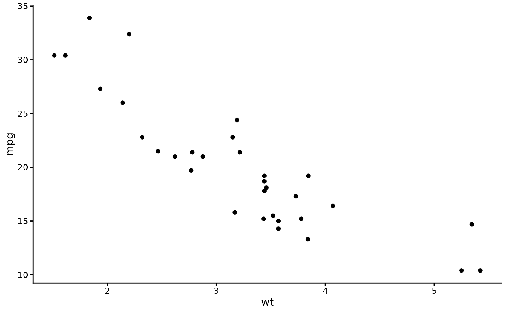

theme_halftone() is an incomplete theme to add on top of your own theme, for example
theme_classic() + theme_halftone(). It changes only what a halftone needs and leaves fonts, sizes and axes to the
theme it is added to:
Usage
theme_halftone(paper = "white", palette = c("inks", "process", "none"))
ggsave_journal(
filename,
plot,
width = c("double", "single", "onehalf"),
height = 100,
dpi = 600,
format = NULL,
bg = "white",
...
)
halftone_proof(
plot,
width = "single",
height = 62,
dir = tempdir(),
centre = c(0.5, 0.5),
size = 20,
zoom = 4,
dpi = 600,
bg = "white"
)Arguments
- paper
Background colour of the plot and panel. Use halftone_paper for cream stock.
- palette
Default discrete palette on ggplot2 4.0 and later:
"inks"(halftone_inks),"process"(halftone_process, press colours of one or two plates) or"none"to leave the palettes alone.- filename, plot, dpi, ...
Passed to
ggplot2::ggsave().- width
"single"(89 mm),"onehalf"(120 mm),"double"(183 mm) or a width in mm.- height
Height in mm.
- format
"png","tiff"or"pdf";NULLtakes it from the extension offilename.- bg
Device background. Set it to the paper colour when the plot has a fixed aspect ratio, because the device shows beside the panel.
- dir, centre, size, zoom
For
halftone_proof(): output directory, the crop centre as a fraction of width and height, the crop size in mm, and the magnification.
Details
paper ground: plot and panel backgrounds in
paper, no gridlines, no panel border fill;legend keys large enough to show a screen (6 by 4 mm), no key background;
on ggplot2 4.0 and later, halftone_inks (or halftone_process) as the default discrete palette and halftone_ramp as the default continuous palette. It also sets the geom accent, which on ggplot2 4.0 is where an unmapped geom colour comes from: the stock accent is the blue
geom_smooth()draws its line in, and left alone it is the one colour in a screened figure that sits outside the register.halftone_inksholds six inks andhalftone_rampfour stops; past six groups, mapscale_screen_discrete()instead of colour, or passpalette = "none"and set your own.
ggsave_journal() saves at a journal column width in mm. The file extension selects the format: PNG or TIFF at
600 dpi through ragg, or vector PDF through cairo_pdf(). Most journals prefer vector files for line art, and in a
vector file every dot is a path at physical size. halftone_proof() renders a plot at final size and a magnified
crop of one region (by default the panel centre at 4x) and returns the two file paths.
References
Nature Portfolio. Formatting guide: figures. https://www.nature.com/nature/for-authors/formatting-guide Elsevier. Artwork and media instructions. https://www.elsevier.com/about/policies-and-standards/author/artwork-and-media-instructions
Examples
ggplot2::ggplot(mtcars, ggplot2::aes(wt, mpg)) + ggplot2::geom_point() +
ggplot2::theme_classic() + theme_halftone()
